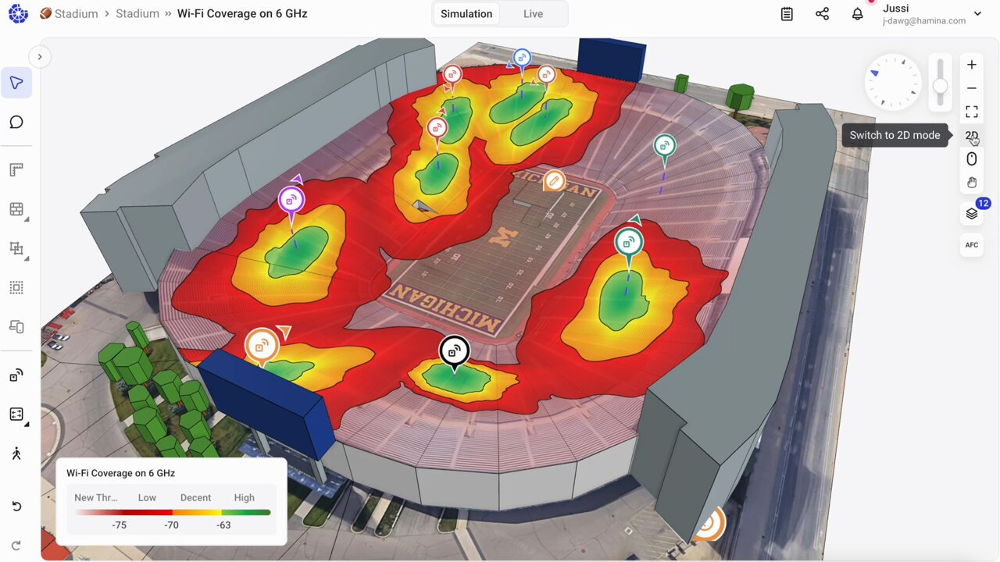

Systemutvecklare på Hamina Wireless (Jan 2025 – )

Hamina Wireless (https://www.hamina.com) är ett finskt teknikföretag som utvecklar design- och analysverktyg för
trådlösa nätverk. Jag arbetar i Network Planner produktutvecklingsteamet,
där jag utvecklar och underhåller funktioner för Network Planner
-applikationen. På jobbet, använder jag dagligen en mängd olika webb- och
3D-teknologier.
Programvaruutvecklare på Mipro (Jun 2022 – Feb 2025)

Mipro (https://www.mipro.fi) är ett
finskt konsultföretag som specialiserar sig på järnvägstrafik och
industriella system. Jag arbetade i Mipros Core Reporting-team med att
utveckla ett automatiserat rapporteringssystem för kunder.
-
Jag utvecklade en fullstack webbapplikation med React och TypeScript.
-
Jag skapade ett e2e-testramverk för applikationen med Playwright och
Jenkins.
-
Jag utvecklade och underhöll webbinfrastrukturen med Terraform och
Kubernetes.
-
Jag var en sommar som Scrum Master i vårt team och var med och utveckla
utvecklingsprocessen i vårt team.
-
Jag arbetade i kundgränssnittet och fick direkt feedback och förslag från
kunderna.
Anställningsbeviset
Digivastaava på Tietokilta (Tammikuu 2024 – Joulukuu 2024)

Tietokilta är ämnesföreningen för datavetenskapsstuderande vid
Aalto-universitetet, och som frivillig var jag ordförande för Tietokiltas
digitalkommitté 2024. Digitalkommitténs uppgift är att utveckla och
underhålla Tietokiltas IT-infrastruktur, och Digivastaavan organiserar denna
verksamhet och fungerar som en slags projektledare för kommitténs projekt.
Under min mandatperiod som Digivastaava:
-
Jag fördelade arbetsuppgifter till kommittémedlemmarna och höll koll på
projekten.
- Jag organiserade regelbundna möten med kommittén.
-
Jag var involverad i projekt- och infrastrukturutveckling samt
designbeslut.
-
Kommittén lanserade gillets nya webbplats
https://tietokilta.fi
Under 2024 utvecklade Digitalkommittén följande projekt:
- Webbplats implementerad med NextJS, Payload CMS och MongoDB.
- Ett system för fakturagenerering implementerat med Rust och Typst.
-
Ett registreringssystem för evenemang implementerat med TypeScript och
PostgreSQL.
- Guillets Azure-webbinfrastruktur som upprätthålls med Terraform.
Tietokiltas projekt är offentliga och finns tillgängliga här:
https://github.com/Tietokilta
Undervisningsassistent vid Aalto-universitetet (Jun 2023 – Dec 2023)
Jag har arbetat som lärarassistent på följande kurser:
-
Data Structures and Algorithms (Aug 2023 - Dec 2023)
-
Jag hjälpte studenter med övningar på finska, svenska och engelska
-
Programming Parallel Computers, Kursutveckling (Jun 2023 - Aug 2023)
- Jag utvecklade kursens plattform med Python och Flask
- Jag testade och bedömde kursplattformens skalbarhet
Systemadministratör på Päivölä (May 2021 – )
Jag arbetar ibland frivilligt som systemadministratör på Päivölä (https://paivola.fi). Mitt arbete har omfattat underhåll av skolans cloudinfrastruktur med
Ansible och hantering av användarkonton med LDAP och Keycloak. Jag har också
installerat fysisk hårdvara som nätverksswitchar och accesspunkter och
utvecklat skolans interna webbplats med React och Typescript.
Utvecklare på PSIL (Aug 2020 – Jun 2022)

Päivölä Student Innovation Lab (https://psil.fi) är en arbetsplats för studenterna på Päivölän opisto. Jag har deltagit i
följande projekt i PSIL:
-
Schackkameraprojekt (Aug 2020 - May 2021)
-
Jag implementerade sändning av data från webbkameraklient till server
med WebSocketer i Java.
-
Jag deltog i implementeringen av en back-end serverapplikation som
lagrade schackspel som skickades av webbkameraklienter med Javascript
-
Jag skapade ett felsökningsfönster för att ändra inställningarna för
webbkameraklienten med Java
-
"Perintätoimisto" (Inkassobyrå) projekt (Feb 2021 - Jan 2022)
-
Jag skapade ett webbskrapningsskript med Python som samlade in
kontaktinformation från vissa företag
-
Jag designade och programmerade en webbplats med React och TypeScript
för att underhålla en PostgreSQL-databas med klienter och kunder
-
WebDev-team (Aug 2021 - Jun 2022)
-
Jag ledde ett team på 7 personer, organiserade dagliga möten och
ansvarade för att dela ut uppgifter till andra teammedlemmar
-
Jag instruerade och lärde andra teammedlemmar hur man bygger
fullstack-applikationer med React, TypeScript, NodeJS och ExpressJS
-
SimAnalytics Factory Harmonizer (Jan 2022 - Jun 2022)
-
Jag, tillsammans med 2 andra utvecklare från PSIL, utvecklade
användargränssnittet för SimAnalytics Factory Harmonizer-projekt med
React och JavaScript
Anställningsbeviset
Sommarpraktikant på Loupedeck (Jun 2021 - Aug 2021)

Jag deltog i ett programvaruutvecklingsprojekt på Loupedeck (https://loupedeck.com). Företaget höll på att utveckla en ny version av användargränssnittet för
sin nya redigeringskonsol "Live" och jag var med i ett internationellt
utvecklingsteam.
-
Jag använde React med Typescript, Redux och RxJS för att utveckla olika
UI-komponenter
-
Jag undersökte och fixade flera buggar och problem i användargränssnittet
- Jag deltog i dagliga möten
Bilden visar delar av användargränssnittet som jag arbetade med.
Anställningsbeviset
Sommarpraktikant på Loupedeck (Jun 2020 – Jul 2020)

Jag deltog i ett mjukvaruutvecklingsprojekt på Loupedeck (https://loupedeck.com). Företaget utvecklade en ny version av användargränssnittet för sin
redigeringskonsol "CT" och jag var med i ett internationellt
utvecklingsteam.
-
Jag använde React med Typescript, Redux och RxJS för att utveckla olika
UI-komponenter
- Jag deltog i dagliga möten
-
Jag fick positiv feedback om kvaliteten och effektiviteten i mitt arbete
Bilden visar delar av användargränssnittet som jag arbetade med.
Anställningsbeviset
Praktikant på GE Healthcare (Oct 2019)
Jag var två veckor på Prao (praktisk arbetslivsorientering) på GE
Healthcare. Jag arbetade i ett internationellt CI/testteam för ett
produktutvecklingsprogram för trådlösa patientmonitorer.
- Jag körde halvautomatiska tester och skrev ner testresultat
- Jag skrev ett pythonskript som automatiskt analyserade testresultat
{kind=link}